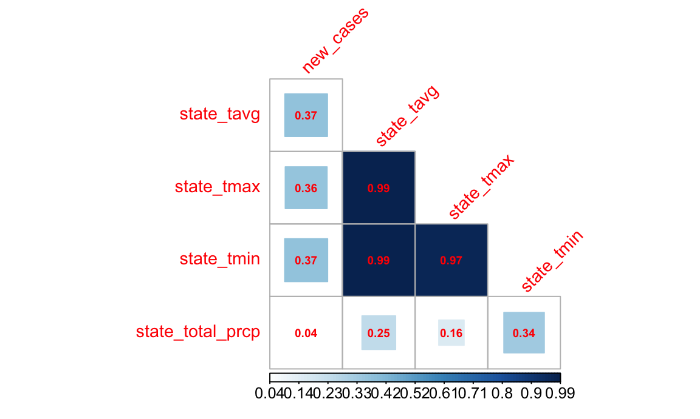

Statistical Analyses
Create dataset with noaa data
The noaa dataset that we used was from the ncdc.noaa.gov website. We retrieved 4 individual datasets from the noaa website. The retrieved dataset includes: 1. tmax: Data for the maximum temperature for each state by month. 2. tmin: Data for the minimum temperature for each state by month. 3. tavg: Data for the average temperaure for each state by month. 4. prcp: Data for the precipitation values for each state by month.
The datasets were scraped from the website using read_csv and were then merged with the COVID19 dataset by month and state.
Import Covid dataset. Clean and tidy data
The COVID19 dataset was imported using the COVID19 R package. COVID-19 data was obtained from the COVID19 package. This function has arguments set to return data at the state level. This dataset included information on the date, state, as well as the number of cases, tests, and hospitalizations for that given day.
Merging the two dataset
The two datasets were merged by state and month.
Hypothesis
Our team hypothesizes that the relationship between temperature and COVID-19 cases are correlated. We have looked at the trends in COVID and Climate in the United States between Jan 2020 and October 2020. Include a plot here of covid cases vs temperature Check out our interactive map here "insert link to Maya and Michelle’s map. We want to conduct an analysis to see if cases increase with increase in temperature.
Relevant predictors
The following are the relevant predictors we want to include in the model
new_cases- The number of new cases in every month.case_count- The total number of cases in every month.population- Total population of each state - This forms the offset variable in the poisson regression model and the demoninator for the count to extrapolate the rate.state_name- All the states in the USAstate_tavg- The average temperature in a state in a month.state_tmax- The maximum temperature in a state in a monthstate_tmin- The minimum temperature in a state in a monthstate_total_prcp- The total precipitation in a state in a month.
Assessing crude correlation among our selected variables

In order to select the most significant variables in our model we first conducted a crude correlation assessment using a correlation matrix as shown above. From this assessment we decided to remove state_tmax and state_tmin since the r is 0.97 - 0.99, indicating that there is an extreme co-linearity among other predictors.
Confounding
There are many variables that would confound the relationship between temperature and case count. We have included ones that we felt are the most important. However, in order to maintain parsimonious model we restricted the number of predictors. This could also be a limitation of our model.
Modeling - Poisson vs Negative binomial regression
Our outcome variable is a count variable, hence we want to model either a poisson regression or a negative binomial regression.
A poisson distribution assumes that the mean and variance are the same. Sometimes the data shows extra variation that is greater than the mean. This situation is called overdispersion. Negative binomial is more flexible in that regard. Negative binomial has one more parameter the adjusts for the variance independently from the mean.
In order to decide which model to use we cross validate between the two models to see the distribution. We also assess the AIC to determine the model with the smaller AIC.
Cross validation

From the distribution above we can see that both the figures are very similar to each other. We cannot solely base our decision to use either of the models based on this distribution. Hence we look at the AIC.
The poisson model has an AIC of The negative binomial model has an AIC of
Since the Negative binomial model has a smaller AIC than the poission model we chose the negative binomial model.
write_csv(covid_noaa_dataset, "Predictive_Interactive_map/covid_noaa_dataset.csv" )Results 1
For every one degree increase in temperature the case count increases by 0.963 times.
Model 2
Data for Model 2
Hypothesis
In our initial hypotheses we have established that there is a relationship between temperature and COVID-19 cases. We now want to see if this relationship would change with certain events such as school closures, workplace closures and gathering.
Relevant predictors
The following are the relevant predictors we want to include in the model
new_cases- The number of new cases in every month.case_count- The total number of cases in every month.population- Total population of each state - This forms the offset variable in the poisson regression model and the demoninator for the count to extrapolate the rate.state_name- All the states in the USAstate_tavg- The average temperature in a state in a month.school_closing- 0: No measures - 1: Recommend closing - 2: Require closing (only some levels or categories, eg just high school, or just public schools - 3: Require closing all levels.workplace_closing- 0: No measures - 1: Recommend closing (or work from home) - 2: require closing for some sectors or categories of workers - 3: require closing (or work from home) all-but-essential workplaces (eg grocery stores, doctors).gatherings_restriction- 0: No restrictions - 1: Restrictions on very large gatherings (the limit is above 1000 people) - 2: Restrictions on gatherings between 100-1000 people - 3: Restrictions on gatherings between 10-100 people - 4: Restrictions on gatherings of less than 10 people.
Assessing crude correlation among our selected variables

We decided to keep school closing and work place closing because they are important variables.
Confounding
There are many variables that would confound the relationship between temperature and case count. We have included ones that we felt are the most important. However, in order to maintain parsimonious model we restricted the number of predictors. This could also be a limitation of our model.
Modeling - Poisson vs Negative binomial regression
Our outcome variable is a count variable, hence we want to model either a poisson regression or a negative binomial regression.
We decided to do the use the same modelling technique to run a regression analysis.
Cross validation

From the distribution above we can see that both the figures are very similar to each other. We cannot solely base our decision to use either of the models based on this distribution. Hence we look at the AIC.
The poisson model has an AIC of The negative binomial model has an AIC of
Since the Negative binomial model has a smaller AIC than the poission model we chose the negative binomial model.
Results
For every one degree increase in temperature the case count increases by 0.96 times.
Model 3
Data for Model 3
Hypothesis
In our initial hypotheses we have established that there is a relationship between temperature and COVID-19 cases. We now want to see if this relationship would change with certain policies such as information campaigns, testing policies and contact tracing policies.
Relevant predictors
The following are the relevant predictors we want to include in the model
new_cases- The number of new cases in every month.case_count- The total number of cases in every month.population- Total population of each state - This forms the offset variable in the poisson regression model and the demoninator for the count to extrapolate the rate.state_name- All the states in the USAstate_tavg- The average temperature in a state in a month.information_campaigns- 0: No COVID-19 public information campaign - 1: public officials urging caution about COVID-19 - 2: coordinated public information campaign (e.g. across traditional and social media).testing_policy- 0: No testing policy - 1: Only those who both (a) have symptoms AND (b) meet specific criteria (eg key workers, admitted to hospital, came into contact with a known case, returned from overseas) - 2: testing of anyone showing COVID-19 symptoms - 3: open public testing (eg “drive through” testing available to asymptomatic people).contact_tracing- 0: No contact tracing - 1: Limited contact tracing, not done for all cases - 2: Comprehensive contact tracing, done for all cases.
Assessing crude correlation among our selected variables

We decided to keep information campaign and testing policy because they are important variables even though the r-sqaured is ~ 0.77.
Confounding
There are many variables that would confound the relationship between temperature and case count. We have included ones that we felt are the most important. However, in order to maintain parsimonious model we restricted the number of predictors. This could also be a limitation of our model.
Modeling - Poisson vs Negative binomial regression
Our outcome variable is a count variable, hence we want to model either a poisson regression or a negative binomial regression.
We decided to do the use the same modeling technique to run a regression analysis.
Cross validation

From the distribution above we can see that both the figures are very similar to each other. We cannot solely base our decision to use either of the models based on this distribution. Hence we look at the AIC.
The poisson model has an AIC of The negative binomial model has an AIC of
Since the Negative binomial model has a smaller AIC than the poission model we chose the negative binomial model.
Results
For every one degree increase in temperature the case count increases by 0.957 times.